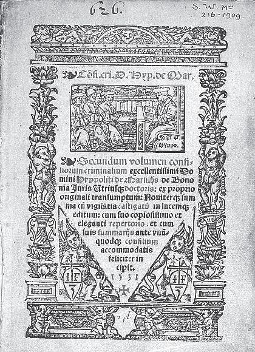

除了上面介绍的数学成就以外，埃及人和巴比伦人还将数学大量地应用于实际生活。他们在纸草书、泥板书上记载账目、期票、信用卡、卖货单据、抵押契约、待发款项，以及分配利润等事项。算术、代数被用于商业交易，几何公式则被用来推算土地和运河横断面的面积，计算储存在圆形仓或锥形仓中的粮食数量。当然，无论埃及人的金字塔，还是巴比伦人的通天塔和空中花园，都凝聚着数学的智慧和光芒。
一方面，在数学和天文学被用于计算历法和航海之前，人类本能的好奇心和对大自然的恐惧存在已久，他们年复一年地观察太阳、月亮和星星的运行。埃及人已经知道一年共有365天，他们对季节的变化也有所了解和掌握。人们通过对太阳方位和角度的观察，预计尼罗河水泛滥的时间；通过对星星的位置和方向的辨别，确定在海洋（地中海或红海）中航船的方向。巴比伦人不仅能预测各大行星在每一天的位置，还能把新月和亏蚀出现的时间精确到几分钟之内。
另一方面，在巴比伦和埃及，数学与绘画、建筑、宗教以及自然界的探究之间的联系，在密切性和重要性方面丝毫不逊色于数学在商业、农业等方面的应用。巴比伦和埃及的祭司可能掌握了普遍的数学原理，但他们对这些知识秘而不宣，只用口头的方法传授，从而加剧了人民大众对统治阶级的敬畏。这样一来，尤其是与没有僧侣阶级统治的文明比较起来，显得不太利于数学和其他文明的发展。
当然，宗教神秘主义本身也对自然数的性质产生了好奇心，并将数作为表达神秘主义思想的一个重要媒介。一般认为，巴比伦的祭司发明了这种有关数的神秘甚或魔幻的学说，后来又为希伯来人加以利用并发展了。比如数字7，巴比伦人最早注意到了它是上帝的威力和复杂的自然界之间的一个和谐点；到了希伯来人手里，7又成为一个星期的天数。《圣经》里说，上帝用6天时间造物和人，第7天是休息日。

1531年的拉丁文版《圣经》
还有一些数字之谜，比如，巴比伦人为何要把圆设为360°？这可能是巴比伦人在公元前最后一个世纪的创造，但却与他们使用已久的六十进制无关，后者被用于小时和分、秒之间的计量换算。2世纪的希腊天文学家托勒密（C.Ptolemaeus，约90—168）接受了巴比伦人的这种定义，之后一直被沿用。而埃及人则把他们的天文和几何知识用于建造神庙，使得在一年中白昼最长的那一天，阳光能直接进入庙宇，照亮祭坛上的神像。金字塔朝向天空特定的方向，而斯芬克斯则面向东方。
可以说，是人类层出不穷的需要和兴趣，加上对天空的无法抑制的想象，激发了自身的数学灵感和潜能。巧合的是，自然界本身也存在数学规律，或者说，是以数学的形式存在的。无论柏拉图所言，上帝是一位几何学家；还是雅可比修正的，上帝是一位算术家。这些似乎都意味着，造物主是以数学的方式创造世界的。这样一来，我们就更容易明白，数学不仅来源于人们生存的需要，最终也一定要返回到这个世界中去。
不幸的是，无论埃及还是巴比伦尼亚，在历史上都不断遭受外敌入侵，中东地区的文明或权力交替频繁。特别是在7世纪中叶，阿拉伯人的统治重新确立了这两个地区的语言和宗教信仰。后来，这两个民族都没有很好地进入现代社会，可以说社会发展和生产力水平偏低，虽然伊拉克已探明的石油储量位列世界第二。进入21世纪以来，它们又相继经历了伊拉克战争和“茉莉花革命”。如此看来，一个国家或民族某个时期数学和文明的发达，并不能确保其经济社会永远持续有效地发展。